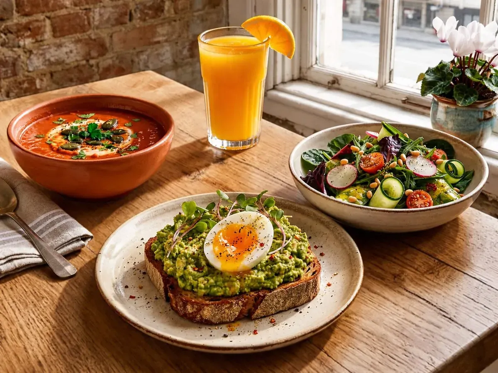

Catering in Nijmegen: welke cateraar past bij jouw feest?
Bijgewerkt op 24 november 2026.
Een feest geven is leuk, de hele dag in de keuken staan niet. Een cateraar neemt dat van je over. Maar wie past bij een bruiloft, wie bij een bedrijfslunch en wie bij een tuinfeest met bbq? We zetten de cateraars in Nijmegen per gelegenheid op een rij.

Zo hebben we gekozen
We lazen in november 2026 de websites van de cateraars in onze bedrijvengids. Vraag altijd een offerte, want prijzen hangen af van het aantal gasten, het menu en de locatie.
Bruiloft, feest of bedrijfsevent
De Honneurs: voor grote feesten
De Honneurs doet particuliere, zakelijke en eventcatering. Denk aan bruiloften, bedrijfsfeesten, walking dinners en streetfood met foodtrucks. De meeste pakketten zijn er vanaf 40 personen.
Goed voor: een bruiloft of bedrijfsfeest met veel gasten.
Cateringservice Royale: buffet, lunch en high tea
Royale verzorgt al jaren buffetten, borrels, diners en bedrijfslunches. Van een informeel hapjesbuffet tot een compleet diner, en ook high tea en bbq. Voor een lunch kies je belegde broodjes, wraps of salades.
Goed voor: een verjaardag, jubileum of zakelijke bijeenkomst.
One For The Road: 30 jaar catering op maat
One For The Road doet al 30 jaar catering, van bedrijfsfeest tot zakenlunch. Ze zijn ook gespecialiseerd in crewcatering voor evenementen en complete barproducties.
Goed voor: evenementen en festivals.
Bbq en foodtrucks
De BBQ Brandtweer: smokers en vintage brandweerwagens
De BBQ Brandtweer komt met vintage brandweerwagens en grote smokers naar je toe. Het vlees gaart langzaam op Oklahoma Smokers of wordt gegrild op houtskool. Dat kan op een festival, bij je bedrijf of in je eigen achtertuin. Met allergieën en dieetwensen houden ze rekening.
Goed voor: een tuinfeest of bedrijfsbbq die indruk maakt.
Piazzani: Italiaans uit een foodtruck
Piazzani kookt Italiaans, live en vers, vanuit stijlvolle foodtrucks. Ze komen naar thuisfeesten, bedrijfsfeesten en evenementen in heel Nederland, voor groepen van 35 tot 300 personen.
Goed voor: pizza en pasta op een groot feest.
De Rode ComCommer: vegetarisch en biologisch
De Rode ComCommer serveert vegetarische en biologische hapjes en gerechten vanuit een oude brandweerwagen. Kleurrijk en lekker, voor feesten, evenementen en festivals.
Goed voor: een feest waar je geen vlees wilt serveren.
Ook op locatie: Smokehouse de Kronenburger (burgers en spareribs), Paella Live Cooking en de poffertjeskraam van Poffertjes Express.
Wereldkeuken
Qasioun: Midden-Oosterse buffetten
Qasioun verzorgt Midden-Oosterse gerechten voor bedrijfsfeesten, bruiloften en tuinfeesten. Klanten roemen de variatie in smaken en de huiselijke aankleding van het buffet.
Goed voor: een buffet met veel kleine gerechten om te delen.
D'Afrigián: Nigeriaanse keuken
D'Afrigián is een cateraar waarin verschillende generaties samenwerken. Ze koken Nigeriaans en geven gerechten uit andere culturen een eigen draai. Van uitgebreide buffetten tot lunchboxen en borrelhapjes, voor een verjaardag, bruiloft of zakelijk evenement.
Goed voor: wie zijn gasten iets nieuws wil laten proeven.
Meer wereldkeuken: Wereldkoks, een sociale onderneming bij het Waalplein, Ward's Wereldkeuken en Gazi's Spicy Indian Food, die na 27 jaar restaurant Indian Way nu catering doet vanaf 12 personen.
Diner aan huis
Private Dining by Pepijn Oostervink: sterrenkok in je keuken
Pepijn werkte 4,5 jaar als kok bij De Nieuwe Winkel, het Nijmeegse restaurant met twee Michelinsterren. Nu kookt hij een diner op maat in jouw eigen keuken.
Goed voor: een bijzonder diner voor een kleine groep.
Tom's Taste: diner aan huis vanaf 8 personen
Tom's Taste aan de Hatertseweg verzorgt lunches, diners aan huis vanaf 8 personen, proeverijen en workshops.
Goed voor: een verjaardagsdiner thuis met vrienden.
Lunch en ontbijt op het werk
Toms Lunch maakt dagverse belegde broodjes met lokale ingrediënten. Partyservice Milder bezorgt broodjes aan bedrijven in Nijmegen en Wijchen. Veel Soeps heeft een soepenbuffet. Een ontbijt op bed bestel je bij Dé Nijmeegse Ontbijtservice.
Drankjes erbij? Bij Bar Company huur je een cocktailbar, koffiebar of smoothiebar. Zoek je nog een plek voor je feest? Lees dan waar je een zaal huurt in Nijmegen.
Veelgestelde vragen
Wat kost catering in Nijmegen?
Dat hangt af van het aantal gasten en het menu. Vraag bij twee of drie cateraars een offerte. Grote cateraars als De Honneurs werken vaak vanaf 40 personen, Gazi's Spicy Indian Food vanaf 12 en Tom's Taste kookt aan huis vanaf 8 personen.
Welke cateraar doet bbq in Nijmegen?
De BBQ Brandtweer komt met smokers en vintage brandweerwagens. Ook Smokehouse de Kronenburger en Cateringservice Royale verzorgen bbq.
Is er vegetarische catering in Nijmegen?
Ja, De Rode ComCommer serveert alleen vegetarische en biologische gerechten, vanuit een oude brandweerwagen.
Kan ik een kok aan huis boeken in Nijmegen?
Ja. Pepijn Oostervink, oud-kok van De Nieuwe Winkel, kookt een diner op maat bij je thuis. Tom's Taste doet diners aan huis vanaf 8 personen.